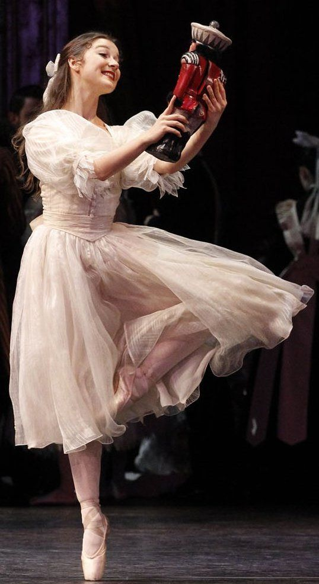
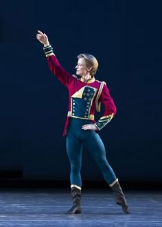
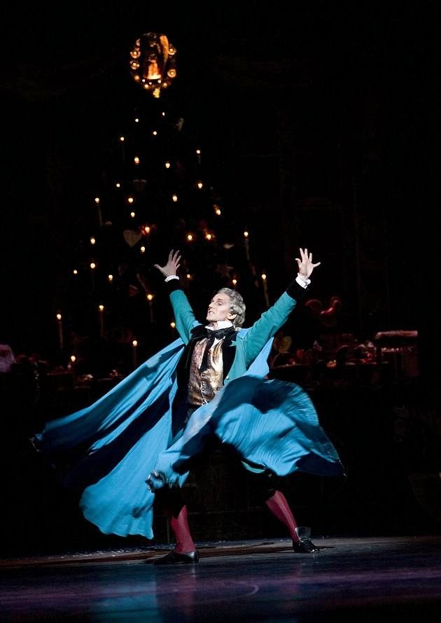
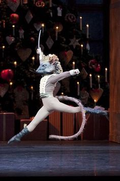
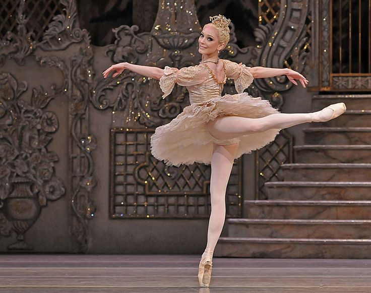

A história começa na noite de Natal, durante uma festa na casa da jovem Clara. Entre os convidados está seu padrinho, Drosselmeyer, um misterioso inventor que lhe presenteia com um boneco Quebra-Nozes. Ao final da festa, Clara adormece segurando o presente e passa a viver uma aventura fantástica.
Durante a noite, o Quebra-Nozes ganha vida e enfrenta o Rei dos Camundongos em uma grande batalha. Com a ajuda de Clara, ele vence o inimigo e se transforma em um belo príncipe. Juntos, eles viajam para o encantado Reino dos Doces, onde são recebidos com danças, celebrações e homenagens. O balé termina em clima de sonho, magia e encantamento.
O Quebra-Nozes é um dos balés mais conhecidos e encenados do mundo, especialmente durante o período natalino.
Estreou em 1892, no Teatro Mariinsky, em São Petersburgo.
Coreógrafo: Marius Petipa e Lev Ivanov
Compositor: Piotr Ilitch Tchaikovsky
Estilo: Balé clássico fantástico.
O Quebra-Nozes destaca-se por sua atmosfera leve e fantástica, diferente dos balés trágicos e dramáticos.
A obra é conhecida por incluir muitas crianças no elenco, tornando-se ideal para escolas de balé.
A música de Tchaikovsky é extremamente marcante e acessível ao público, contribuindo para a popularidade da obra.
É um balé que valoriza o encantamento visual, a fantasia e a imaginação.

Clara (ou Marie)
A protagonista da história.
A inocência, a imaginação e a transição da infância para o amadurecimento.
O Quebra-Nozes / Príncipe
Inicialmente um boneco, transforma-se em príncipe após derrotar o Rei dos Camundongos.
Coragem e fantasia.


Drosselmeyer
Padrinho de Clara, inventor excêntrico e misterioso.
É o responsável por introduzir a magia na história.
Rei dos Camundongos
O antagonista do Ato I.
Representa o conflito e o desafio que inicia a aventura.


Fada Açucarada
Governante do Reino dos Doces.
Elegante e delicada, protagoniza algumas das danças mais famosas do balé.
I – A Festa de Natal
A história se inicia com uma animada festa de Natal. Crianças e adultos celebram juntos, trocando presentes e dançando. Clara recebe o Quebra-Nozes de Drosselmeyer. À noite, após adormecer, o cenário se transforma: brinquedos ganham vida e ocorre a batalha entre os soldados de brinquedo e os camundongos.
II – O Reino dos Doces
Após a vitória sobre o Rei dos Camundongos, Clara e o Príncipe Quebra-Nozes chegam ao Reino dos Doces. Lá, são recebidos pela Fada Açucarada, que organiza uma série de danças em homenagem aos visitantes. O ato é marcado por cores, leveza e variações técnicas.